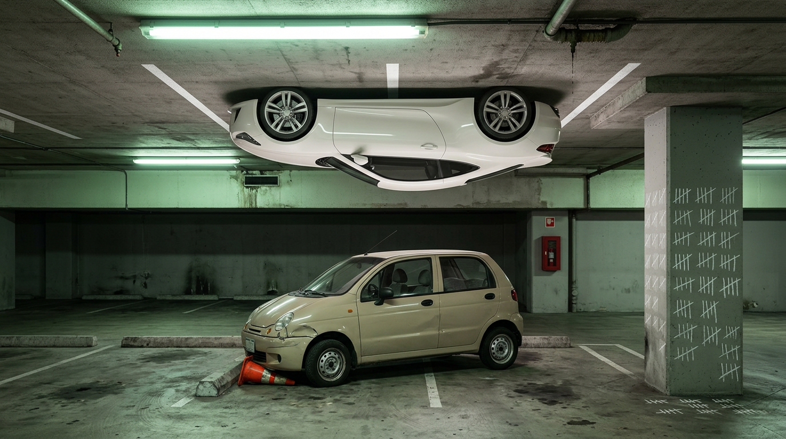

The New Tesla Roadster Can Fly. Can You Use a Turn Signal?
The Train Moves at the Speed of the Caboose: Elon’s Flying Roadster, a Volvo That Blinked Right for Three Kilometers, and Why We Keep Handing Rocket Boots to People Who Trip on the Rug
Yesterday afternoon I was stuck behind a Volvo with its right turn signal on.
For three kilometers.
Not three blocks. Three KILOMETERS. Tick. Tock. Tick. Tock. A small amber metronome keeping time for a song only she could hear. Every intersection, I braced. Here it comes. She’s turning. This is the one.
She did not turn. She drove past every right turn in the Autonomous City of Buenos Aires with the serene dignity of Judi Dench arriving at a funeral she’d agreed to attend but not to enjoy. I never saw her face. I didn’t need to. The posture said everything. The posture said: I have signaled my intentions to the universe and the universe can wait.
I used to run. Seriously, competitively, with the shoes and the ruined toenails. On a decent day I could have gotten out of my car, overtaken her on foot, waved, and been home with a coffee before she located the turn she was saving the blinker for.
Why am I telling you about a stranger’s Volvo? Because I’m the one with the blog, Sparky. Sit down. Buckle up. It’s going to take a while and you’re not getting off at the next stop either.
The Train
There’s a bit by Jim Jefferies that I think about more than any grown man should think about stand-up comedy.
I’m paraphrasing from memory, and he does it with more swearing and better timing, but the shape is this: humanity is a train. Up front there’s one small wagon where the smart people live. They’re shoveling coal. They invented the wheel, the vaccine, the satellite, the reasonably priced microwave burrito. Behind them, wagon after wagon after wagon of everybody else. Not bad people. Just people. People who read the instructions after they’ve broken the thing.
And the train can only go as fast as the engine can drag the back of it.
That’s the joke. That’s also, if you squint, the most accurate theory of civilization I’ve ever heard, and it came from an Australian who used to sing opera before his vocal cords quit on him. (True. Look it up. He was in the chorus. The universe has a sense of humor and it’s mostly at our expense.)
Hold the train in your head. We’re going to need it.
Meanwhile, at a SpaceX Test Site in Texas
Last night, October 15, 2026, after nine years of delays that would embarrass a Soviet tractor factory, Tesla finally unveiled the new Roadster.
Quick history for the people in the back wagons. Tesla first showed this car as a prototype in November 2017 and promised it for 2020. Then the dates started sliding like a drunk on a waxed floor. This year alone, Elon promised an unveil in April, then late April, then “a month or so” after earnings, then August, then October 1. At one point he pinned a demo to April 1 and said the April Fools’ date gave him “deniability.”
Deniability. For a car. That son of a b!tch.
But he showed up. And look, I want to be fair here, because what came out of that hangar is a legitimately bonkers piece of engineering.
There are three versions:
- Performance. The road-legal one. Two seats, active aero, a “multi-mode suction system.” 0 to 60 mph in under 1.6 seconds.
- Thrust. Adds rear-mounted cold-gas thrusters. 0 to 60 in under 0.9 seconds. Limited release.
- Rocket. One seat. Thrusters around the perimeter of the car for upward and rotational movement. 0 to 60 in under 0.59 seconds, top speed over 230 mph. Invite only. And per Tesla’s own Roadster page, not approved for public road use.
Those thrusters come from SpaceX. Tesla claims they generate four to five times the force the tires can handle, which is how it gets around the traction limit that caps every other car on Earth. In the stream, the thing jumped. It flipped. It did a KICKFLIP, like a skateboard, like a teenager in a parking lot showing off for a girl who isn’t watching.
And the suction fans, the ones under the car? Tesla says they pull enough air out from underneath to hold the car upside down. Even standing still. On a ceiling. Like a gecko that went to Stanford.
The wings in Track Mode are driven by the same actuators Tesla built for the Optimus robot. So the car has robot arms. Holding wings. Over a rocket.
I’m not freaking Jeremy Clarkson. I can’t tell you how it handles a wet roundabout outside Swindon. But I watched the clip four times.
This is a Jetsons car. This is the car you drew in fourth grade in the margin of your math homework, the one with flames coming out of it, and the teacher wrote “see me” in red pen.
And here’s the line that’s been rattling around my brain pan since the stream ended. Before the event, Musk said this would be the last new vehicle driven by humans that Tesla will make. Tesla left its automated driving system out of it entirely.
Sit with that. The last car Tesla intends for a human to drive is the one that asks MORE of the human than any car ever built. Gravity optional. Ceiling optional. Rotation available on request.
You thought this was going to be a car review. You thought I was turning left. Instead I stood in the middle of the intersection, put on my hazards, and did the Macarena.
STOP.
Pull the car over. Engine off. Because the Roadster isn’t the story. The Roadster is the front wagon. The story is the caboose, and the caboose has its blinker on.
The Caboose, by the Numbers
Here’s the back of the train.
1.19 million. That’s how many people the World Health Organization says die on the world’s roads every year. More than two a minute. Over 3,200 a day. Road crashes are the leading killer of children and young people aged 5 to 29, which is a sentence I had to read twice, and then I had to go stand on the balcony for a minute.
And 92% of those deaths happen in low- and middle-income countries. Not where the Roadsters live. Where the Volvos with dead blinkers live. Where I live.
Argentina. The civil association Luchemos por la Vida counted 6,248 deaths on Argentine streets and highways in 2025. The government’s National Road Safety Agency counted 3,255 for the same year. The gap is mostly method: Luchemos counts people who die at the scene AND those who die within thirty days, and the official numbers have historically leaned on police reports from the scene. The two have argued about it for years. Pick whichever number you like. Both of them are a stadium.
Luchemos also counted roughly 190,000 dead over 25 years. Their line, which I’m going to translate loosely because it deserves to be heard in English: no war, catastrophe or natural disaster has produced a tragedy like it in this country.
And when the president of Luchemos, María Cristina Isoba, was asked this year what needs fixing, she didn’t say engines. She said driver’s licenses are unfinished business, along with road education in schools. She wants the license exam to stop being a quiz about recognizing signs and start making applicants solve real traffic situations.
Translation: the problem is not the car. The problem is the dunderhead the license was handed to.
The Ceiling Is Not the Problem. The Floor Is.

Now the blinker, because I promised you the blinker.
In 2012 the Society of Automotive Engineers published an observation study: 12,000 turning and lane-changing vehicles, watched by actual humans. Drivers neglected the signal on 25% of turns and 48% of lane changes. Scaled up across the United States, that’s about 750 billion missed signals a year. The study’s estimate was that turn-signal neglect contributes to as many as 2 million crashes a year, roughly double the figure the US Department of Transportation was then attributing to distracted driving.
And here’s the detail that made me laugh out loud in an empty room. Some write-ups of the study count it as an error not only when you fail to signal, but when you forget to switch it off.
My Volvo lady isn’t an outlier. She’s a data point. She’s IN the 48%. She is, statistically speaking, a citizen in good standing of the back wagon.
So let’s run the inventory. A car exists that can, by its maker’s account, cling to a ceiling with fans. And on the floor, in the real city, in the real afternoon, there is a woman who has been signaling a turn since the previous presidential administration. There are people here, and I’ve watched them, who need more than twenty minutes to parallel park.
And those are the parked examples. The stationary failures. Let me give you the ones that move.
Three in the morning. The airport. I get into an Uber, and somewhere on the highway I realize my driver is falling asleep. Not drowsy. Not a long-day yawn. Asleep, in the chin-meets-chest, eyelids-losing-the-argument sense, while doing Top Gun speed down the highway like he’d been cleared hot by the tower and was late for the dogfight.
So I poked him.
Every five minutes. For the entire ride. A finger to the shoulder. Hey. He’d jolt awake, grip the wheel like it owed him money, and start sinking again. I wasn’t a passenger. I was the human snooze button on a two-ton projectile. Nobody has ever been more awake in the back of a car than I was that night, which, mathematically, made one of us.
Then there’s the family.
Mom, dad, kids, one car, not enough seats. A logistics problem. And they solved it the way the back wagon solves everything: they popped open the trunk and shoved the children in. Like groceries. Like a carpet they’d bought on sale and didn’t trust the roof rack with.
In front of a police officer.
Let me say that again for the people in the cheap seats. A uniformed, badge-wearing, presumably licensed representative of the state was standing RIGHT THERE while a family stowed its offspring in the luggage compartment.
That’s the train. That’s the caboose. And last night we bolted thrusters onto the front of it.
“But It’s Just a Toy for Rich People”
Sure. Partly. But power trickles down whether we ask for it or not, and the data on what happens when it does is not encouraging.
In 2016, IIHS ran speed cameras on nearly 27,000 vehicles and matched them to registration records. They measured vehicle power as horsepower per 100 pounds of weight. Then they controlled for driver age and sex, speed limit, vehicle type and traffic, and found that a 3-unit increase in power (about 90 extra horsepower on a 3,000-pound midsize car) was associated with:
- a 2.2% higher average speed,
- a 7.7% higher chance of speeding at all,
- and a 38% higher chance of going more than 10 mph over the limit.
The same data showed average power per pound rose about 60% for cars between 1985 and 2015. That’s the whole fleet, quietly growing muscles, while the drivers stayed exactly the same size.
Now take that 1985-to-2015 curve and put a sub-1.6-second road-legal Roadster at the end of it. The base car, the one that’s actually for sale.
The insurance world is split on whether EVs specifically crash more. LexisNexis found that households switching from a gas car to an EV file more claims after the switch, and the jump was bigger for EVs than for gas-to-gas swaps. HLDI, the insurance-industry data shop, has not found higher crash rates for Teslas or EVs overall, just higher claim costs. I’m not going to pretend to referee that from a balcony in Buenos Aires. But on horsepower and speed, the old insurance rule holds: more of the first, more of the second.
The Name on the Button
Here’s the part that worries me more than the speed.
AAA surveyed Americans in 2018 and found that 40% expected driver-support systems with names like “Autopilot,” “ProPILOT” or “Pilot Assist” to be able to drive the car by themselves. They couldn’t. They can’t. A later AAA Foundation study gave people fictional system names and found the marketing wording alone shifted how much they trusted the machine. AAA’s own warning was that vague names lead people to overestimate what the car can do.
Forty percent. Of people. Read a button label and decided the car was a chauffeur.
Now. The trims of the new Roadster are called Performance, Thrust, and Rocket.
You see where I’m going. I’m going there in a car that can’t turn its own blinker off.
Every new capability is a new parameter. Gravity. Rotation. Thrust vectoring, which I’m not qualified to explain and neither is the guy who’ll buy it. Engineers. Investors. Whatever is running the comments section on that livestream. All of them are excited about adding dimensions to driving. Nobody is excited about the dimension we already have and keep failing: the flat one, where you look in the mirror, you signal, and then you actually turn.
There’s a fellow in a leather jacket from a certain dinosaur movie whose whole job was to stand in the rain and tell the clever people they’d been so busy asking whether they could that they never asked whether they should. I always thought he was the most annoying man in the film. I’m starting to think he was the only one with a valid license.
The Counterargument, Done Properly
I have four. I’m not going to strawman any of them, because I’d rather argue with myself here than have the top comment do it for me.
One. The Rocket is not for her. The flying one is invite-only and not approved for public roads. Dame Judi is never getting one. Nobody’s driving a thruster car to the Coto on Cabildo. The road-legal Performance trim is just an extremely fast sports car, and extremely fast sports cars have existed since before I was born. Fair. Although see the IIHS numbers above, which say the “just” in “just fast” carries more weight than it looks.
Two. The front wagon is the engine. That’s literally Jefferies’s point. The smart people shovel coal and the train MOVES. A huge share of what keeps you alive in a car was once somebody’s extravagant, pointless, look-what-we-can-do engineering, tested at absurd speeds by people with more money than caution. Braking, safety cells, stability control: a lot of the boring stuff that saves you started life as somebody’s exotic. Halo cars are how the future gets paid for. I don’t want to live in a world that stops building ridiculous things. That world gives you nothing to put in the margins of your math homework.
Three. Things are actually, slowly, getting better. The same WHO report says road deaths fell 5% since 2010, even as the number of vehicles on Earth roughly doubled. That is a real achievement and it’s mostly the work of unglamorous stuff: seatbelt laws, helmet laws, speed enforcement, better road design. Which, if you notice, is not an argument for thrusters. It’s an argument for the floor.
Four. I am a guy with a blog, and the back wagon is not a place other people live. It’s a place I visit regularly. Some days I have a season ticket.
Hold all four. Then notice that none of them touch the actual complaint, which is about where the attention goes. All of them are true and the caboose is still on fire.
What We Actually Need
Not a car that sticks to a ceiling.
A license exam that makes you solve a real intersection instead of naming a sign, which is exactly what the people counting the bodies in this country have been asking for. Enforcement that exists outside of press releases. Road education in schools. And, I’m not even kidding, a blinker that turns itself off after three kilometers and asks the driver, gently, whether she’s all right.
That’s the whole wish list. It’s boring. It costs less than the rounding error on a single Roadster deposit. It would save more lives in Argentina this year than every rocket car ever built, combined, forever.
Jefferies was right. The train goes at the speed it can drag the caboose. And last night, in Texas, a very clever man bolted a jet engine onto the front of the locomotive, kickflipped it for the cameras, and told us it’s the last one we’ll ever be allowed to drive ourselves.
Somewhere out on the pampas the chains are pulled tight, the white car’s wheels are spinning, and at the very back, in the last wagon, a little amber light goes tick... tock... tick... tock.
She’s going to turn any minute now.
Any minute.
Quick Questions From the Cheap Seats
When was the new Tesla Roadster unveiled?
Tesla unveiled the next-generation Roadster in a livestream on October 15, 2026, from a SpaceX test site in Texas. The car was first shown as a prototype in November 2017 with production promised for 2020. Musk has said production will not begin until 2028.
How fast is the new Tesla Roadster?
Tesla lists three versions. Performance, the road-legal model, does 0–60 mph in under 1.6 seconds. Thrust, which adds rear cold-gas thrusters, does it in under 0.9 seconds. Rocket, with thrusters around the perimeter, does it in under 0.59 seconds and has a top speed of over 230 mph. Tesla quotes a range of over 300 miles.
Can the new Tesla Roadster fly or drive upside down?
The Rocket trim uses SpaceX-derived cold-gas thrusters that let it jump, flip and rotate in the air, and it was shown doing a kickflip during the unveiling. Tesla also claims the car’s suction fans can pull enough air from underneath to hold it upside down, even when stationary. The Rocket trim is invite-only, and Tesla’s own Roadster page says it is not approved for public road use.
How much does the new Tesla Roadster cost?
Tesla has not announced a price for any version. Reservations require $5,000 at signup and a further $45,000 within ten days, the same $50,000 total Tesla asked for in 2017.
How many people die in road crashes each year?
According to the WHO’s Global Status Report on Road Safety 2023, about 1.19 million people die in road traffic crashes every year, more than 3,200 per day. Road crashes are the leading cause of death for people aged 5–29, and about 92% of deaths occur in low- and middle-income countries.
How many people died on Argentina’s roads in 2025?
The civil association Luchemos por la Vida recorded 6,248 deaths in 2025, counting people who died at the scene and within 30 days. Argentina’s National Road Safety Agency recorded 3,255 for the same year. The difference reflects different counting methods.
How often do drivers fail to use their turn signals?
A 2012 Society of Automotive Engineers observation study of 12,000 vehicles found drivers neglected to signal on 25% of turns and 48% of lane changes, and estimated that turn-signal neglect contributes to as many as 2 million crashes a year in the US. The study’s author was promoting a device designed to address the problem.
Do more powerful cars speed more?
Yes, according to a 2016 IIHS study. After controlling for driver and road factors, an increase of about 90 horsepower on a 3,000-pound car was associated with a 38% higher likelihood of exceeding the speed limit by more than 10 mph.
Rant over. No Volvos were harmed in the writing of this. One was followed for three kilometers, at a respectful distance, with the patience of a saint and the vocabulary of a sailor.
Signal. Turn. Turn the signal off. It’s not a rocket. It’s a stick next to the wheel.